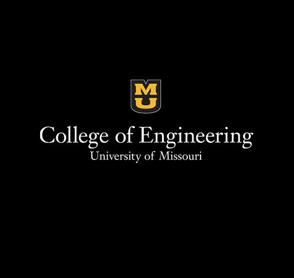
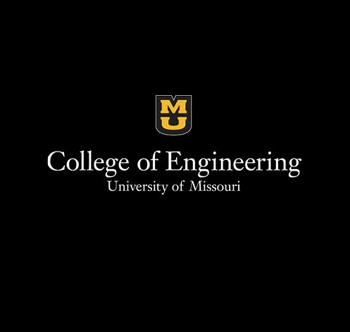

Personal Reflection
I’m still very early in my career, as I haven’t graduated college just yet. I’m a senior though, so I’ll be jumping into my first fulltime job in IT in right around a year. My time here at the University of Missouri has been nothing short of fantastic. I started my college career as a Biological Sciences major expecting to get my PhD and become a professor. I did very well my first semester, but I concluded that Biology wasn’t for me. I switched to IT right before my second semester, and I’ve been happy ever since.
The Information Technology program at Mizzou has been great. I love the fact that a lot of my classes jump right into writing code and creating things. It’s much more practical than purely learning theory and things like that. I’ve been able to take a great variety of classes through IT as well. Object-oriented programming, web development, Python programming, game development, digital media design, and so much more. They’ve all been great! It’s allowed me to explore a lot of the facets of IT and figure out where I fit.
I got my first IT job at Mizzou as well. That, too, has helped me a great deal in deciding where I want to settle in my career in technology. I’ve gotten to work with computers day to day. It’s made me realize that I really do belong in IT and that I haven’t made a mistake about my major. I get to set up new machines, keep old ones up to date, and see a bit of what makes it all work at such a large level. It is very interesting for the most part, and I really enjoy it as a job. It makes me excited for what lies ahead post-graduation.
Another thing my job in IT at the university made me realize is that I may enjoy a job in systems administration. For the longest time, I’ve been purely interested in software engineering as my future career outlook. However, that’s changed now that I’ve seen a more traditional IT job. Now, I’m certainly open to having either as my career in the future. I would certainly enjoy creating and writing code each day, but, simultaneously, I would enjoy keeping computer systems up and running at a big place like a university. Either way, I’m beyond pleased with my career choice thus far and I’m looking forward to the future.
 
